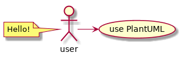

PlantUML¶
The docker image contains the sphinxcontrib.plantuml extension for Sphinx which allows you to embed UML diagrams using PlantUML.
PlantUML is a Java component that allows to write UML and some non-UML diagrams:
- Sequence diagram
- Usecase diagram
- Class diagram
- Activity diagram
- Component diagram
- State diagram
- Object diagram
- Deployment diagram
- Timing diagram
Diagrams are defined using a simple and intuitive language. This can be used within many other tools. Images can be generated in PNG or SVG format.
Examples¶
In the Sphinx reST documents,
simply begin the PlantUML code with the uml directive.

Which generates the following result: